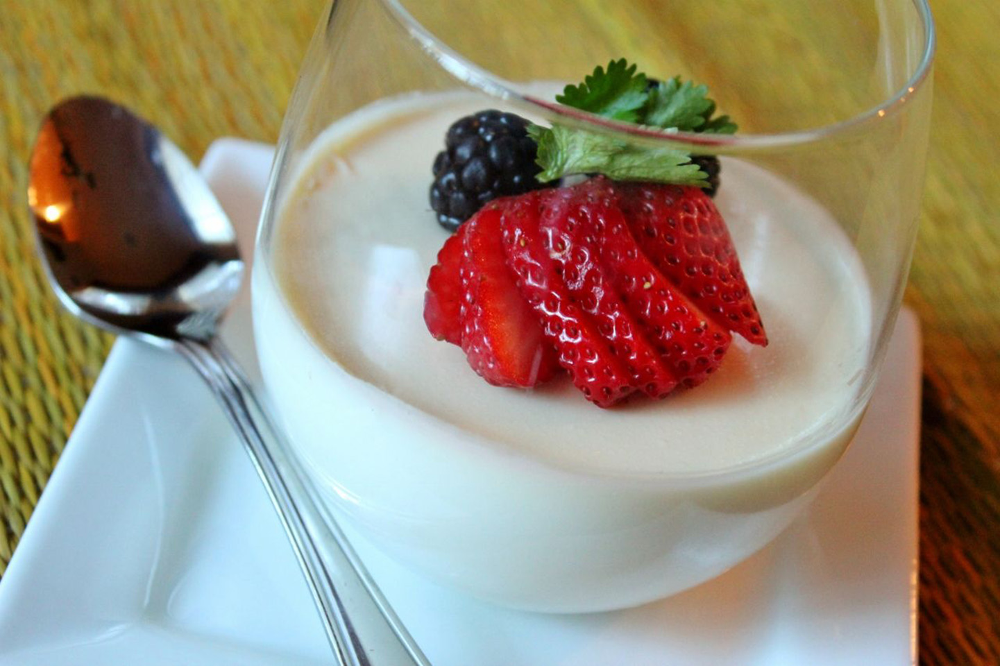

Panna Cotta

Description
A traditional, easy, and delicious Italian custard. It tastes just like the panna cotta served at Italian restaurants. Serve with warm hot fudge sauce and fresh raspberries on top.
Ingredients
- 1/3 cup skim milk
- 0.25 ounce unflavored gelatin
- 2 1/2 cups heavy cream
- 1/2 cup white sugar
- 1 1/2 teaspoons vanilla extract
Directions
- Pour milk into a small bowl, and stir in the gelatin powder. Set aside.
- In a saucepan, stir together the heavy cream and sugar, and set over medium heat. Bring to a full boil, watching carefully, as the cream will rise to the top of the pan. Pour the gelatin and milk into the cream, stirring until completely dissolved. Cook for one minute, stirring constantly. Remove the heat, stir in the vanilla and pour into six individual ramekin dishes.
- Cool the ramekins uncovered at room temperature. When cool, cover with plastic wrap, and refrigerate for at least 4 hours, but preferably overnight before serving.